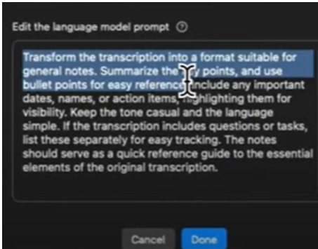

Note Taking
Introduction
Superwhisper can make notes for you by listening to any type of audio.
This audio can be a simple audio file or a video that contains speech.
By dictating content directly or playing a video, Superwhisper can record notes for you.
Below is an example of how you can get Superwhipser to convert any video to notes.
Steps

Try it Yourself
You can use the below video to try the above feature of Superwhisper.
Once again, this works the best when the video is being played at a faster speed such as 1.5x 1.75x or 2x.
Sample Video Video